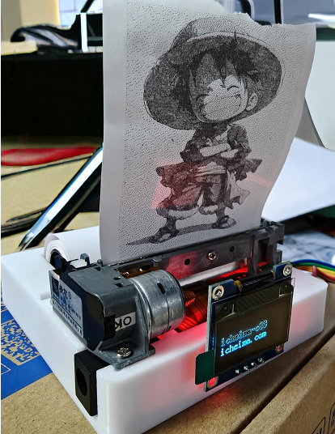
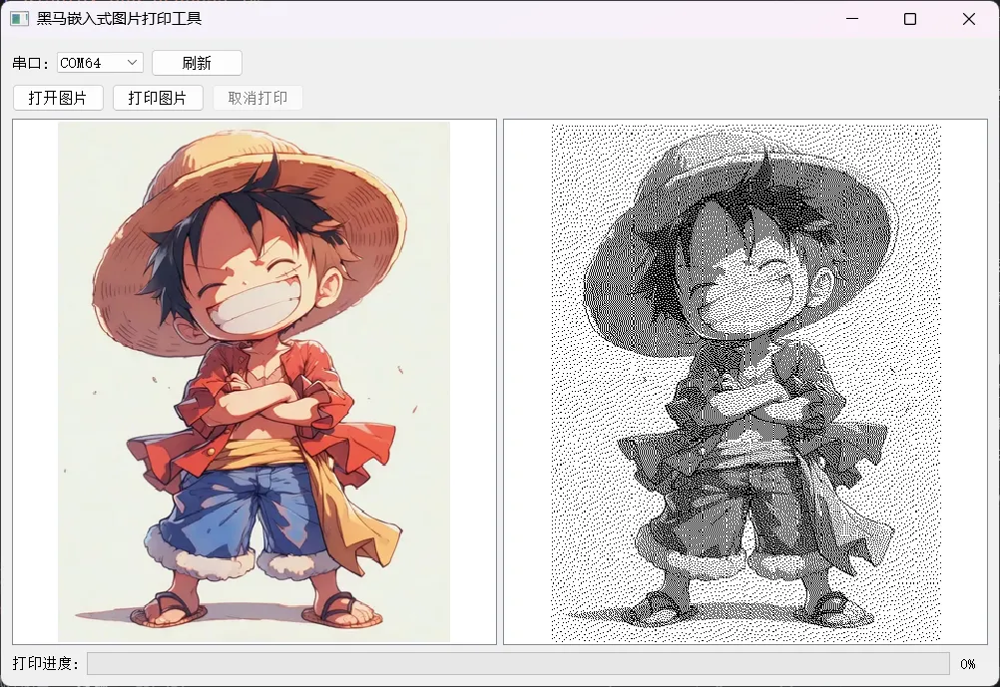
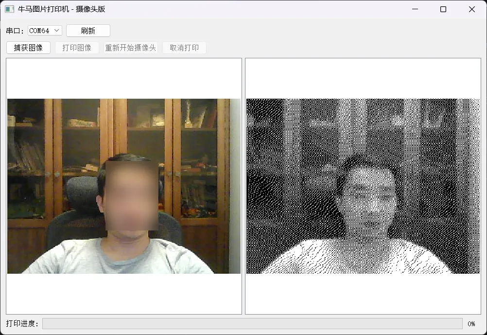
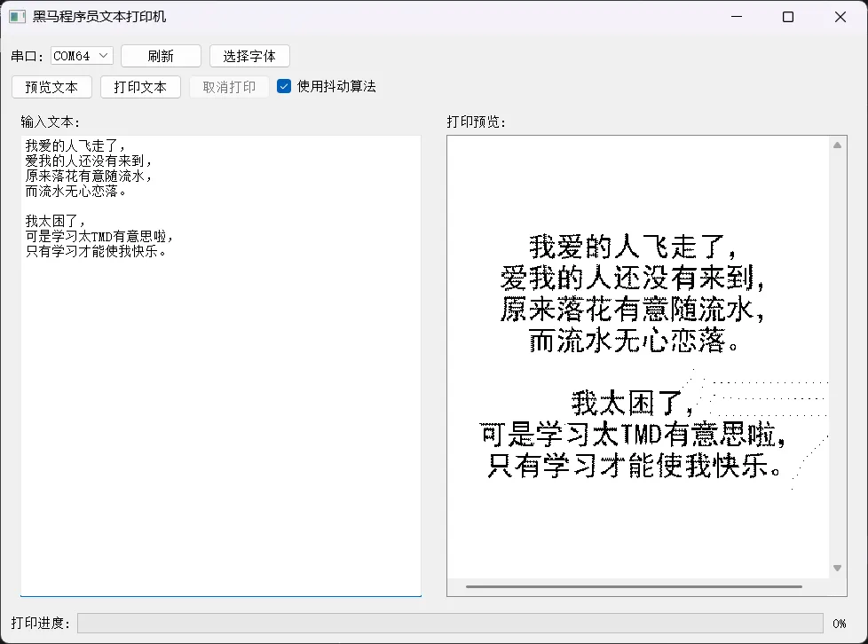
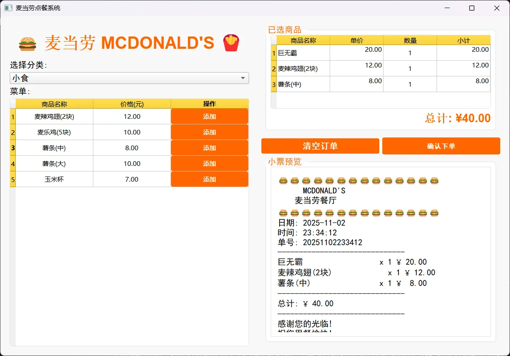

<!DOCTYPE lake>
<p data-lake-id="ucaa667f0" id="ucaa667f0" style="text-align: center"><span data-lake-id="ubfb1d9d9" id="ubfb1d9d9">该项目是一个宇宙无敌牛的项目，除了牛，啥也没有。</span></p><p data-lake-id="u369646d8" id="u369646d8" style="text-align: center"></p><p data-lake-id="uff13e13b" id="uff13e13b" style="text-align: center"><strong><span class="lake-fontsize-12" data-lake-id="ub8128c25" id="ub8128c25" style="color: rgb(51, 51, 51)">オレは海賊王になる男だ！</span></strong></p><p data-lake-id="u14dbcbca" id="u14dbcbca"><br/></p><p data-lake-id="u0c28a900" id="u0c28a900" style="text-align: center"><span class="lake-fontsize-12" data-lake-id="u01520c23" id="u01520c23" style="color: rgb(51, 51, 51)">​</span><br/></p><h2 data-lake-id="wE0rd" id="wE0rd"><span data-lake-id="u82b17e6e" id="u82b17e6e" style="color: rgb(64, 64, 64)">为什么要学习控制热敏打印机？</span></h2><h3 data-lake-id="hfLHM" data-lake-index-type="0" id="hfLHM"><span data-lake-id="u41c0d448" id="u41c0d448" style="color: rgb(64, 64, 64)">嵌入式开发的实践意义</span></h3><p data-lake-id="u91f2d640" id="u91f2d640"><span class="lake-fontsize-12" data-lake-id="ue11e2d27" id="ue11e2d27" style="color: rgb(64, 64, 64)">热敏打印机是物联网设备的常见输出模块，例如：</span></p><ul list="uc6333b46"><li data-lake-id="uc2173100" fid="u4f7b547f" id="uc2173100"><span class="lake-fontsize-12" data-lake-id="ud4033698" id="ud4033698" style="color: rgb(64, 64, 64)">自动售货机打印订单</span></li><li data-lake-id="ubd740ee9" fid="u4f7b547f" id="ubd740ee9"><span class="lake-fontsize-12" data-lake-id="ua5e3a785" id="ua5e3a785" style="color: rgb(64, 64, 64)">智能家居系统的提醒标签</span></li><li data-lake-id="u357bfe5e" fid="u4f7b547f" id="u357bfe5e"><span class="lake-fontsize-12" data-lake-id="u52af06bb" id="u52af06bb" style="color: rgb(64, 64, 64)">工业传感器数据记录<br/></span><span class="lake-fontsize-12" data-lake-id="uddd5786a" id="uddd5786a" style="color: rgb(64, 64, 64)">学习控制它，能掌握</span><strong><span class="lake-fontsize-12" data-lake-id="ud206c954" id="ud206c954" style="color: rgb(64, 64, 64)">硬件通信协议</span></strong><span class="lake-fontsize-12" data-lake-id="u637a1070" id="u637a1070" style="color: rgb(64, 64, 64)">（如UART、SPI，I2C）。</span></li></ul><h3 data-lake-id="Ha6yt" id="Ha6yt"><br/></h3><h3 data-lake-id="H3WOo" data-lake-index-type="0" id="H3WOo"><span data-lake-id="ub6d688e6" id="ub6d688e6" style="color: rgb(64, 64, 64)">商业与创客场景需求</span></h3><ul list="ub44c448f"><li data-lake-id="u21238812" fid="ud9cc425f" id="u21238812"><span class="lake-fontsize-12" data-lake-id="u8b137648" id="u8b137648" style="color: rgb(64, 64, 64)">低成本部署：热敏打印机模块价格低廉（几十元即可入手）。</span></li><li data-lake-id="uc2c03a32" fid="ud9cc425f" id="uc2c03a32"><span class="lake-fontsize-12" data-lake-id="u5604b6ff" id="u5604b6ff" style="color: rgb(64, 64, 64)">创客项目：自制便携式票据打印机、智能称重标签机等。</span></li></ul><p data-lake-id="u4689a321" id="u4689a321"><br/></p><p data-lake-id="uaa993721" id="uaa993721"><br/></p><h2 data-lake-id="A61b6" id="A61b6"><span data-lake-id="u948d0d09" id="u948d0d09">掌握软硬件全栈开发</span></h2><p data-lake-id="u10feb793" id="u10feb793"><span class="lake-fontsize-12" data-lake-id="ua96d7dda" id="ua96d7dda">在这个项目里面，我们除了可以学习硬件电路设计，嵌入式软件开发，还可以学习上位机开发，从而打通软硬件，上位机，下位机开发全栈研发技能，真是嵌入式学习的良药啊。怎么样，要不要学？</span></p><p data-lake-id="u37dece26" id="u37dece26"><span class="lake-fontsize-12" data-lake-id="u27e5cc77" id="u27e5cc77">​</span><br/></p><h3 data-lake-id="ID0JY" id="ID0JY"><span data-lake-id="u74c21742" id="u74c21742">黑马图片打印机</span></h3><p data-lake-id="ub4e29158" id="ub4e29158"></p><h3 data-lake-id="ako1o" id="ako1o"><span data-lake-id="u4a955801" id="u4a955801">牛马拍立得</span></h3><p data-lake-id="u070a0244" id="u070a0244"><span data-lake-id="u159b5aa0" id="u159b5aa0">对，下面这个牛马就是我，我就是下面这个牛马。它是通过采集摄像头画面数据，当我们单击打印图片就将当前摄像头画面数据通过打印机打印出来。</span></p><p data-lake-id="u09f8008a" id="u09f8008a"></p><h3 data-lake-id="aAc3M" id="aAc3M"><span data-lake-id="u77457afb" id="u77457afb">文本打印机</span></h3><p data-lake-id="u6dd820d4" id="u6dd820d4"></p><h3 data-lake-id="ev2OW" id="ev2OW"><span data-lake-id="u6b4f144e" id="u6b4f144e">麦当劳点餐系统</span></h3><p data-lake-id="u3d148b0d" id="u3d148b0d"><span data-lake-id="u34997f6d" id="u34997f6d">该项目为学习餐饮点餐系统研发例程，图片仅供参考。 如有侵权，我就多买两个麦当劳吧。</span></p><p data-lake-id="u762a6a6b" id="u762a6a6b"></p><p data-lake-id="ua9158d02" id="ua9158d02"><span class="lake-fontsize-12" data-lake-id="u28b5b8ec" id="u28b5b8ec">​</span><br/></p><p data-lake-id="u6da2fb50" id="u6da2fb50" style="text-align: center"><span class="lake-fontsize-9" data-lake-id="u82ce8d22" id="u82ce8d22">项目采购地址</span><strong><span class="lake-fontsize-9" data-lake-id="u655b883c" id="u655b883c">：</span></strong><a data-lake-id="u94236970" href="https://item.taobao.com/item.htm?id=991400976412" id="u94236970" rel="noopener noreferrer" target="_blank"><strong><span class="lake-fontsize-9" data-lake-id="uda7f9899" id="uda7f9899">https://item.taobao.com/item.htm?id=991400976412</span></strong></a></p>